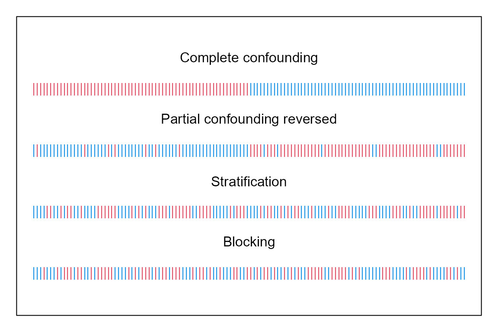
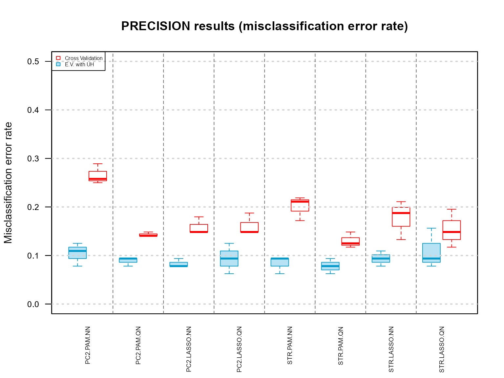
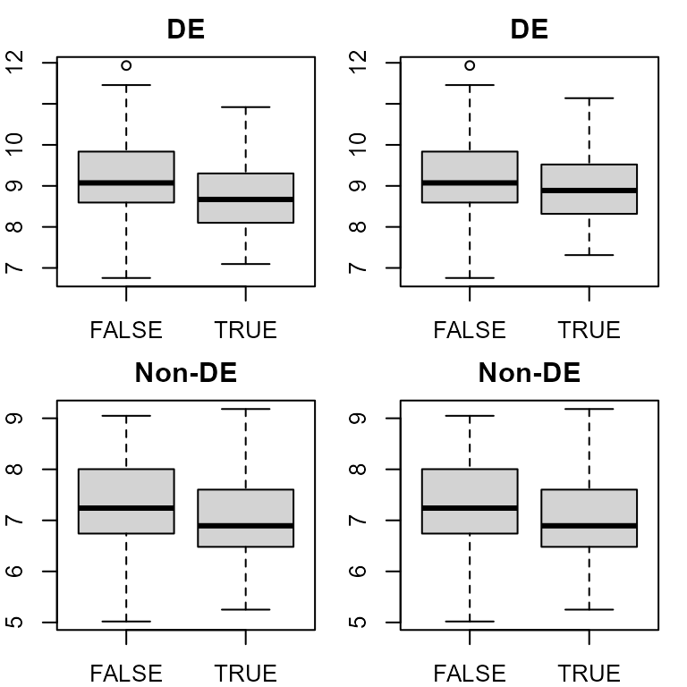
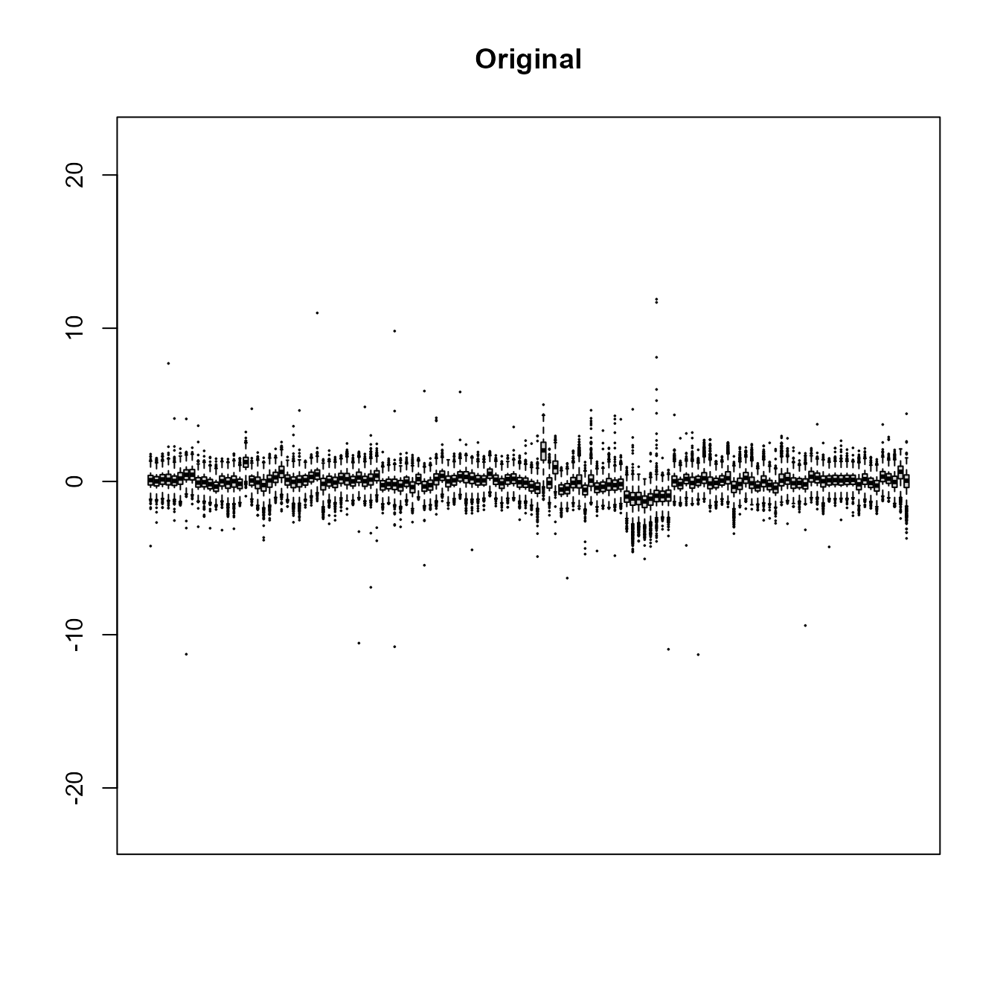
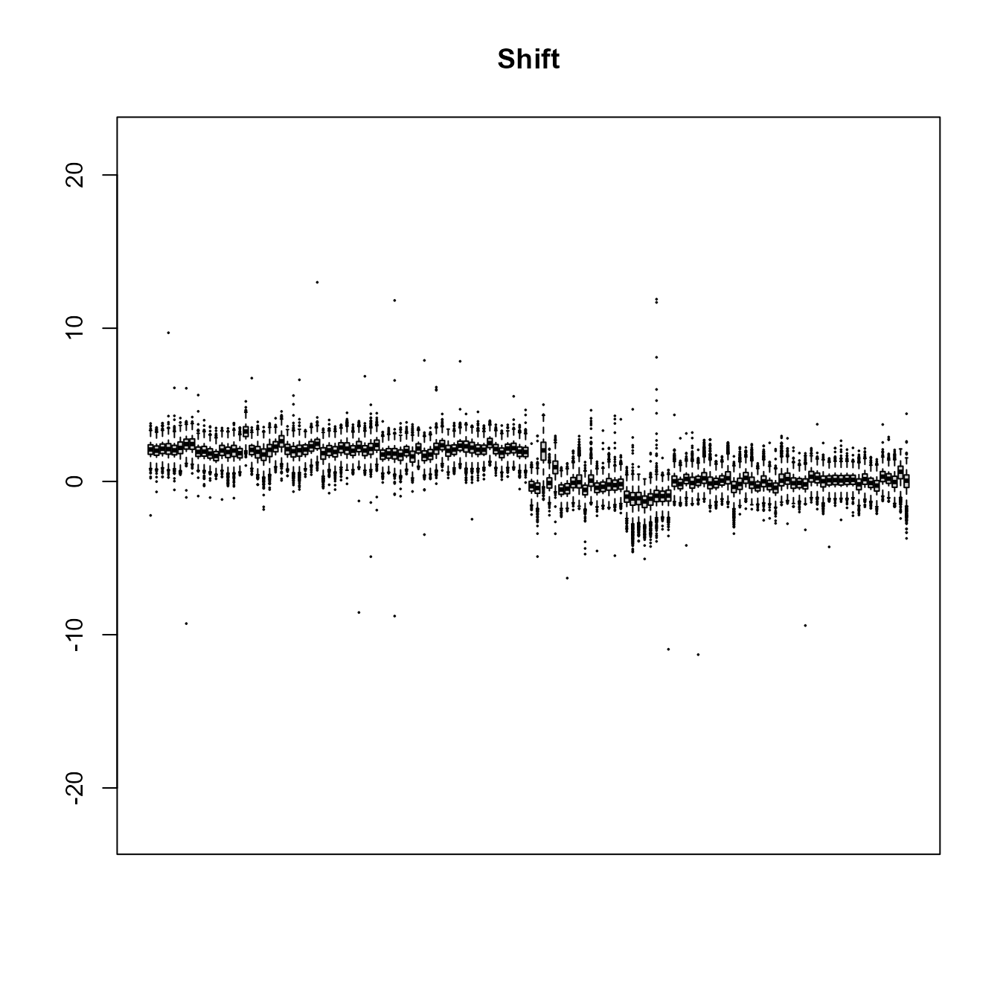
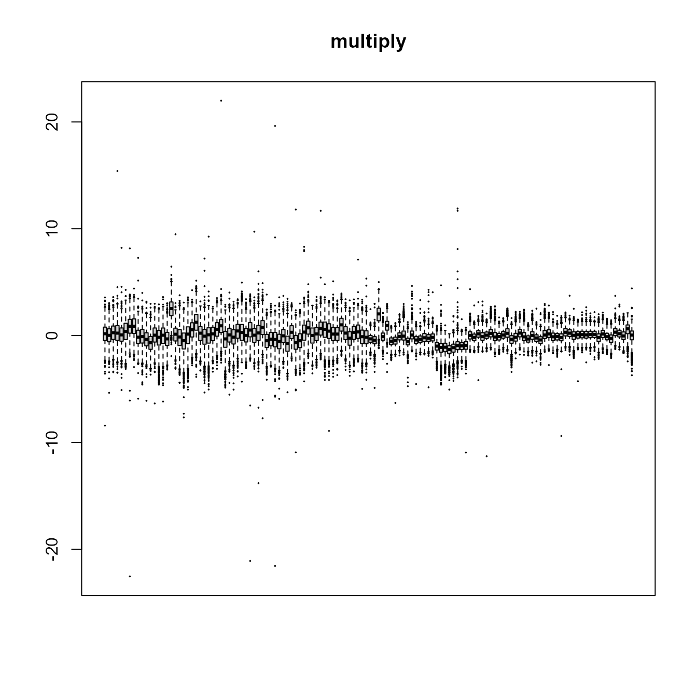
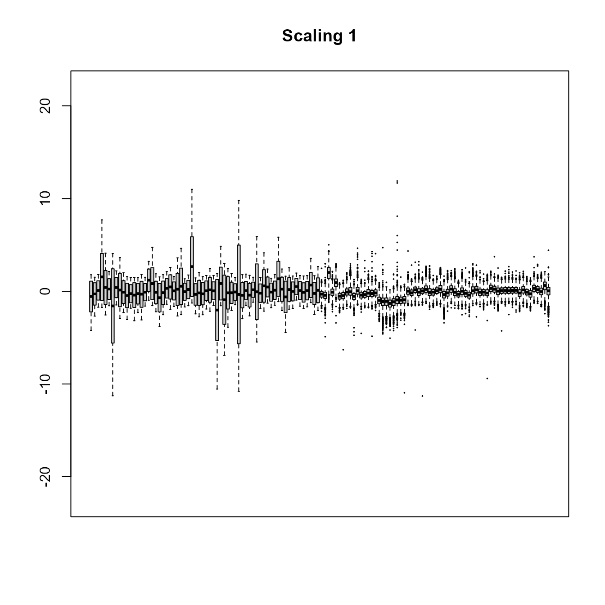
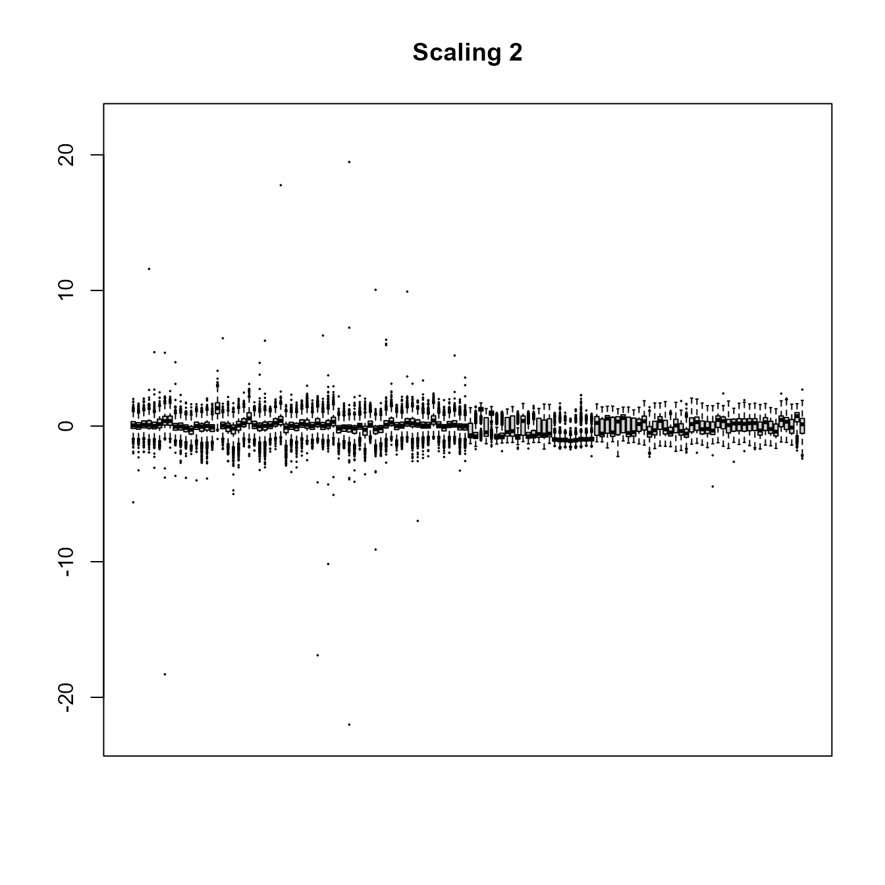

PRECISION.array Vignette
Huei-Chung Huang, Yilin Wu, Qihang Yang, Lixuan Qin
2022-05-12
my-vignette.RmdIntroduction
PRECISION.array is a package that allows users to conduct a re-sampling-based simulation study for molecular classification, using a unique pair of Agilent microRNA array datasets 1, 2. This simulation study is to illustrate the intricate interplay between data generation, data preprocessing, and classification error estimation for molecular classification. It offers insights into the desired practice of study design and data analysis for molecular classification, so that research sources can be optimized to generate high-quality molecular data and develop reproducible classifiers.
This document familiarizes users with the data and the functions available in the package. It also allows users to explore further on the topic using additional normalization and classification methods.
When using PRECISION.array, please cite the following papers:
Huang HC, Qin LX. PRECISION: an R package for assessing study design and data normalization for molecular classification studies using a unique pair of microarray datasets (2016). GitHub repository, https://github.com/LXQin/PRECISION.array.
Qin LX, Huang HC, Begg CB. Cautionary note on cross validation in molecular classification. Journal of Clinical Oncology. 2016, http://ascopubs.org/doi/abs/10.1200/JCO.2016.68.1031.
Package Overview
The first step is to install PRECISION.array from CRAN by typing the following command in R console:
if(!require(PRECISION.array)) install.packages("PRECISION.array")
library(PRECISION.array)Data Description
Two datasets was generated for the same set of 96 endometrial and 96 ovarian tumor samples using different experimental handling designs. The first dataset was handled by one technician in one run and its arrays were randomly assigned to tumor samples with blocking (by array slide, uniformly-handled data). The second dataset was handled by two technicians in multiple batches and its arrays were assigned in the order of sample collection (without blocking or randomization), to mimic typical practice (nonuniformly-handled data). More details on the data collection can be found in Qin et al.3 The datasets are publicly available at GEO here.
To save time for package loading, this package includes two example datasets (probe level): uniformly-handled data uhdata.pl and nonuniformly-handled data nuhdata.pl, which are the 5% random subset of markers from the original data. Here is a glimpse of the datasets. The last character of the sample labels “E” or “V” indicates whether the sample is an endometrial or ovarian tumor. To load the data, simply use the commands below:
| JB5972V | JB4825V | JB4858E | GL4837E | JB4851E | |
|---|---|---|---|---|---|
| A_25_P00011991 | 8.127912 | 8.819649 | 7.884045 | 8.857942 | 9.181432 |
| A_25_P00011991 | 8.535484 | 8.161763 | 7.883385 | 8.096256 | 8.261834 |
| A_25_P00011991 | 8.634458 | 8.314022 | 7.971074 | 8.233367 | 8.389910 |
| A_25_P00011991 | 8.545949 | 7.702258 | 7.866278 | 8.515314 | 8.487699 |
| A_25_P00011991 | 8.424779 | 8.231437 | 7.898494 | 8.288903 | 8.401359 |
| A_25_P00011991 | 8.105393 | 8.478708 | 7.993641 | 8.221049 | 8.000047 |
| A_25_P00011991 | 7.976953 | 8.214458 | 7.393731 | 8.261739 | 8.555910 |
| A_25_P00011991 | 8.836939 | 8.202411 | 8.036554 | 7.569069 | 8.751100 |
| A_25_P00011991 | 8.611705 | 8.004201 | 7.807648 | 8.449999 | 8.298721 |
| A_25_P00011991 | 8.504557 | 8.147085 | 8.280617 | 7.963467 | 8.529588 |
| A_25_P00010683 | 9.081838 | 8.514278 | 10.076731 | 10.375966 | 10.904337 |
| A_25_P00010683 | 9.529377 | 8.159895 | 9.795241 | 9.789566 | 10.716169 |
| A_25_P00010683 | 9.461567 | 8.558404 | 10.080335 | 10.221571 | 10.624501 |
| A_25_P00010683 | 8.992816 | 8.457382 | 9.579407 | 9.780759 | 9.887891 |
| A_25_P00010683 | 9.006044 | 7.941779 | 10.307273 | 9.639772 | 11.094315 |
| JB5535E | JB5742E | JB4662E | JB4166E | JB5669E | |
|---|---|---|---|---|---|
| A_25_P00011991 | 6.880656 | 6.294369 | 6.295855 | 6.538598 | 7.475843 |
| A_25_P00011991 | 6.870565 | 6.285340 | 5.991106 | 6.977209 | 6.618176 |
| A_25_P00011991 | 6.459899 | 6.493501 | 6.330137 | 7.267487 | 6.690687 |
| A_25_P00011991 | 6.534816 | 6.025836 | 6.240593 | 5.980021 | 6.713191 |
| A_25_P00011991 | 6.947713 | 5.794147 | 6.239196 | 6.200107 | 6.888207 |
| A_25_P00011991 | 7.077473 | 6.385904 | 6.883548 | 6.015611 | 6.832903 |
| A_25_P00011991 | 6.505584 | 6.109736 | 6.562414 | 6.791078 | 6.276491 |
| A_25_P00011991 | 7.088928 | 6.146192 | 6.500106 | 6.107168 | 7.146271 |
| A_25_P00011991 | 6.517463 | 6.426560 | 6.170426 | 6.105437 | 6.666085 |
| A_25_P00011991 | 6.369591 | 6.498757 | 6.956111 | 6.670084 | 6.514549 |
| A_25_P00010683 | 7.330250 | 8.687832 | 7.756061 | 9.227016 | 8.417432 |
| A_25_P00010683 | 7.246119 | 8.634174 | 7.405330 | 9.212861 | 8.638573 |
| A_25_P00010683 | 6.834843 | 8.600903 | 7.629651 | 8.749649 | 8.418061 |
| A_25_P00010683 | 7.472080 | 8.618319 | 7.278838 | 9.303259 | 8.976631 |
| A_25_P00010683 | 7.495010 | 8.514229 | 7.338435 | 9.255771 | 8.995639 |
Probe Selection
Initially, the number of replicates for each marker/probe varies between 10 and 40. We recommend truncating the number of replicates to a fixed number across probes to save data preprocessing time. We are confident in recommending this practice because we have previously observed that the variation among replicates for the same probe is small. Here, we provide per.unipbset.truncate() to truncate the number of replicates in data. In our simulation study, we used only the first 10 replicates for each unique probe.
## Example of taking only the first 5 replicates for each unique probe
uhdata.pl.p5 <- per.unipbset.truncate(data = uhdata.pl,
num.per.unipbset = 5)The Agilent platform includes control probes, but most of the analyses demonstrated in this document will use only non-control probe data. An exception is when batch effects are adjusted by RUV-4 (explained in a later section). The following code identifies and filters out the control probes from the data.
Data Simulation
We used the uniformly-handled dataset to approximate the biological effect for each sample, and the difference between the two arrays (one from the uniformly-handled dataset and the other from the nonuniformly-handled dataset) for the same sample to approximate the handling effect for each array in the nonuniformly-handled dataset. This is done with estimate.biological.effect() and estimate.handling.effect() as follows:
biological.effect <- estimate.biological.effect(uhdata = uhdata.pl)
handling.effect <- estimate.handling.effect(uhdata = uhdata.pl, nuhdata = nuhdata.pl)
biological.effect.nc <- biological.effect[!rownames(biological.effect) %in% ctrl.genes, ]
handling.effect.nc <- handling.effect[!rownames(handling.effect) %in% ctrl.genes, ]The 192 samples were randomly split in a 2:1 ratio into a training set and a test set, balanced by tumor type. The 192 arrays were non-randomly split to a training set (n=128, the first 64 and last 64 arrays in the order of array processing). The first 80 arrays were profiled by one technician and the rest by the other technician.
set.seed(101)
group.id <- substr(colnames(biological.effect.nc), 7, 7)
# randomly split biological effect data into training and test set with equal number of endometrial and ovarian samples
biological.effect.train.ind <- colnames(biological.effect.nc)[c(sample(which(group.id == "E"), size = 64), sample(which(group.id == "V"), size = 64))]
biological.effect.test.ind <- colnames(biological.effect.nc)[!colnames(biological.effect.nc) %in% biological.effect.train.ind]
# non-randomly split handling effect data into training and test set
handling.effect.train.ind <- colnames(handling.effect.nc)[c(1:64, 129:192)]
handling.effect.test.ind <- colnames(handling.effect.nc)[65:128]
group.id.list <- list("all" = group.id,
"tr" = substr(biological.effect.train.ind, 7, 7),
"te" = substr(biological.effect.test.ind, 7, 7))
array.to.sample.assign <- list("all" = c(rep(c("E", "V"), each = 64),
rep(c("V", "E"), each = 32)),
"tr" = rep(c("E", "V"), each = 64),
"te" = rep(c("V", "E"), each = 32))Next, for the training set, data were simulated through “virtual re-hybridization” by first assigning arrays to sample groups using a confounding design or a balanced design, and then summing the biological effect for a sample and the handling effect for its assigned array. For the test set, we used only the biological effect data from the uniformly-handled dataset. Three study design functions assign arrays to samples (confounding.design(), stratification.design(), blocking.design()). Finally, rehybridize() is provided to sum biological effects to handling effects, following array-to-sample assignments.
# complete confounding
cc.ind <- confounding.design(seed = 1, num.array = 128,
degree = "complete", rev.order = FALSE)
# partial confounding reversed
pc.rev.ind <- confounding.design(seed = 2, num.array = 128,
degree = "partial", rev.order = TRUE)
# stratification
batch.id <- list(1:40, 41:64, (129:160) - 64, (161:192) - 64)
str.ind <- stratification.design(seed = 3, num.array = 128,
batch.id = batch.id)
# blocking
blk.ind <- blocking.design(seed = 4, num.array = 128)Below is one of the possible array-to-sample-group splits for the study designs. Each vertical bar represents an array and the color of each stripe represents which sample group the array is assigned to.

assign.ind <- confounding.design(seed = 1, num.array = 192,
degree = "complete", rev.order = FALSE)
group.id <- substr(colnames(biological.effect.nc), 7, 7)
# re-hybridize
sim.data.raw <- rehybridize(biological.effect = biological.effect.nc,
handling.effect = handling.effect.nc,
group.id = group.id,
array.to.sample.assign = assign.ind)
# re-hybridize + correct batch effects with SVA
sim.data.sva <- rehybridize(biological.effect = biological.effect.nc,
handling.effect = handling.effect.nc,
group.id = group.id,
array.to.sample.assign = assign.ind,
isva = TRUE)
# re-hybridize + correct batch effects with RUV-4
biological.effect.ctrl <- biological.effect[rownames(biological.effect) %in% ctrl.genes, ]
handling.effect.ctrl <- handling.effect[rownames(handling.effect) %in% ctrl.genes, ]
sim.data.ruv <- rehybridize(biological.effect = biological.effect.nc,
handling.effect = handling.effect.nc,
group.id = group.id,
array.to.sample.assign = assign.ind,
iruv = TRUE,
biological.effect.ctrl = biological.effect.ctrl,
handling.effect.ctrl = handling.effect.ctrl)Batch effect correction is available in the re-hybridization step. The adjustment can be turned on by specifying icombat = TRUE, isva = TRUE or iruv = TRUE for ComBat4, sva5, and RUV-46; if none of these is selected, no batch adjustment will be performed. Note that when RUV-4 (iruv = TRUE) is selected, control-probe data must be supplied.
Data Preprocessing
Data preprocessing in the study includes three steps:
log2 transformation;
normalization for training data and frozen normalization for test data (that is, mapping the empirical distribution of each individual test-set sample to the “frozen” empirical distribution of the normalized training data);
probe-replicate summarization using the median.
We provide med.norm(), quant.norm(), and vs.norm() for median normalization, quantile normalization7, and variance stabilizing normalization8, respectively.
set.seed(101)
group.id <- substr(colnames(sim.data.raw), 7, 7)
# randomly split data into training and test set with equal number of endometrial and ovarian samples
train.ind <- colnames(biological.effect)[c(sample(which(group.id == "E"), size = 64), sample(which(group.id == "V"), size = 64))]
train.dat <- sim.data.raw[, train.ind]
test.dat <- sim.data.raw[, !colnames(sim.data.raw) %in% train.ind]
# median normalize (normalize training data only)
data.mn1 <- med.norm(train = train.dat)
# median normalize (frozen normalize test data only)
data.mn2 <- med.norm(test = test.dat, ref.dis = data.mn1$ref.dis)
# quantile normalize (normalize training data + frozen normalize test data)
data.qn <- quant.norm(train = train.dat, test = test.dat)
# variance stabilizing normalize (normalize training data + frozen normalize test data)
data.vsn <- vs.norm(train = train.dat, test = test.dat)To summarize replicate level data to unique probe level, based on within-probe medians, med.sum.pbset() can be used:
uhdata.psl <- med.sum.pbset(data = uhdata.pl, num.per.unipbset = 10)Classifier Development and Error Estimation
Regardless of classification methods, internal cross-validation can be used to select the tuning parameter(s) and external validation should be used to validate the performance. In our simulation study, we reported results from the use of two classification methods: one non-parametric method (prediction analysis for microarrays (PAM)9) and one parametric method (THE least absolute shrinkage and selection operator (LASSO)10). Examples of model-building and predicting functions in PRECISION.array are pam.intcv() and pam.predict() for PAM and lasso.intcv() and lasso.predict() for LASSO.
set.seed(101)
# randomly split biological effect data into training and test set with equal number of endometrial and ovarian samples
biological.effect.train.ind <- colnames(biological.effect.nc)[c(sample(which(group.id == "E"), size = 64), sample(which(group.id == "V"), size = 64))]
biological.effect.test.ind <- colnames(biological.effect.nc)[!colnames(biological.effect.nc) %in% biological.effect.train.ind]
biological.effect.nc.tr <- biological.effect.nc[, biological.effect.train.ind]
biological.effect.nc.te <- biological.effect.nc[, biological.effect.test.ind]
# build a PAM classifier
pam.int <- pam.intcv(X = biological.effect.nc.tr,
y = substr(colnames(biological.effect.nc.tr), 7, 7),
kfold = 5, seed = 1)
# predict with the PAM classifier
pam.pred <- pam.predict(pam.intcv.model = pam.int,
pred.obj = biological.effect.nc.te,
pred.obj.group.id = substr(colnames(biological.effect.nc.te), 7, 7))
# cross-validation misclassification error rate
pam.int$mc
# external validation misclassification error rate
pam.pred$mc
# build a LASSO classifier
lasso.int <- lasso.intcv(X = biological.effect.nc.tr,
y = substr(colnames(biological.effect.nc.tr), 7, 7),
kfold = 5, seed = 1, alp = 1)
# predict with the LASSO classifier
lasso.pred <- lasso.predict(lasso.intcv.model = lasso.int,
pred.obj = biological.effect.nc.te,
pred.obj.group.id = substr(colnames(biological.effect.nc.te), 7, 7))
# cross-validation misclassification error rate
lasso.int$mc
# external validation misclassification error rate
lasso.pred$mcWrapper Functions for Running Simulations
Finally, the main functionality of PRECISION.array is to provide users with an efficient way to reproduce our simulation studies reported in JCO in press. Two wrapper functions are available to do so: one for the analysis of the uniformly-handled data and the other for the analysis of data with confounding handling (i.e. the analysis of simulated data)
Analysis of the uniformly-handled data
The analysis of the uniformly-handled data is based on N splits of training-and-test-set for the uniformly-handled data; uni.handled.simulate() is used. Users can manipulate the signal level of the estimated biological effects and choose the method for data normalization and classification.
uni.handled.results <- uni.handled.simulate(seed = 1, N = 3,
biological.effect = biological.effect.nc,
norm.list = c("NN", "QN"),
class.list = c("PAM", "LASSO"))
knitr::kable(data.frame(uni.handled.results$error_store[2, ]),
caption = "Analysis of uniformly-handled data")| PAM.NN | PAM.QN | LASSO.NN | LASSO.QN |
|---|---|---|---|
| 0.171875 | 0.140625 | 0.187500 | 0.156250 |
| 0.140625 | 0.156250 | 0.156250 | 0.156250 |
| 0.156250 | 0.156250 | 0.140625 | 0.171875 |
Analysis with confounding handling
The analysis of data with confounding handling is based on N array-to-sample reassignments using precision.simulate(). Users can control the signal level of the estimated biological effects, the confounding level of the estimated handling effects, array-to-sample study design, the normalization method, the batch adjustment method, and the classification methods.
set.seed(101)
group.id <- substr(colnames(biological.effect.nc), 7, 7)
# randomly split biological effect data into training and test set with equal number of endometrial and ovarian samples
biological.effect.train.ind <- colnames(biological.effect.nc)[c(sample(which(group.id == "E"), size = 64), sample(which(group.id == "V"), size = 64))]
biological.effect.test.ind <- colnames(biological.effect.nc)[!colnames(biological.effect.nc) %in% biological.effect.train.ind]
biological.effect.train.test.split =
list("tr" = biological.effect.train.ind,
"te" = biological.effect.test.ind)
# non-randomly split handling effect data into training and test set; technician effect as proxy
handling.effect.train.test.split =
list("tr" = c(1:64, 129:192),
"te" = 65:128)
biological.effect.nc.tr <- biological.effect.nc[, biological.effect.train.ind]
biological.effect.nc.te <- biological.effect.nc[, biological.effect.test.ind]
handling.effect.nc.tr <- handling.effect.nc[, c(1:64, 129:192)]
handling.effect.nc.te <- handling.effect.nc[, 65:128]
# simulation without batch adjustment
precision.results <- precision.simulate(seed = 1, N = 3,
biological.effect.tr = biological.effect.nc.tr,
biological.effect.te = biological.effect.nc.te,
handling.effect.tr = handling.effect.nc.tr,
handling.effect.te = handling.effect.nc.te,
group.id.tr = substr(colnames(biological.effect.nc.tr), 7, 7),
group.id.te = substr(colnames(biological.effect.nc.te), 7, 7),
design.list = c("PC-", "STR"),
norm.list = c("NN", "QN"),
class.list = c("PAM", "LASSO"),
batch.id = list(1:40, 41:64, (129:160) - 64, (161:192) - 64))
# simulation with RUV-4 batch adjustment
# (bringing in control-probe data)
biological.effect.tr.ctrl <- biological.effect.ctrl[, biological.effect.train.test.split$tr]
handling.effect.tr.ctrl <- handling.effect.ctrl[, handling.effect.train.test.split$tr]
precision.ruv4.results <- precision.simulate(seed = 1, N = 3,
biological.effect.tr = biological.effect.nc.tr,
biological.effect.te = biological.effect.nc.te,
handling.effect.tr = handling.effect.nc.tr,
handling.effect.te = handling.effect.nc.te,
group.id.tr = substr(colnames(biological.effect.nc.tr), 7, 7),
group.id.te = substr(colnames(biological.effect.nc.te), 7, 7),
design.list = c("PC-", "STR"),
norm.list = c("NN", "QN"),
class.list = c("PAM", "LASSO"),
batch.id = list(1:40, 41:64, (129:160) - 64, (161:192) - 64),
iruv = TRUE,
biological.effect.tr.ctrl = biological.effect.tr.ctrl,
handling.effect.tr.ctrl = handling.effect.tr.ctrl)
knitr::kable(data.frame(precision.results$error_store[2, "PC-"]),
aligh = "l",
caption = "Analysis of simulated data in presence of confounding handling")| PAM.NN | PAM.QN | LASSO.NN | LASSO.QN |
|---|---|---|---|
| 0.109375 | 0.093750 | 0.078125 | 0.12500 |
| 0.078125 | 0.078125 | 0.078125 | 0.09375 |
| 0.125000 | 0.093750 | 0.093750 | 0.06250 |
knitr::kable(data.frame(precision.ruv4.results$error_store[2, "PC-"]),
aligh = "l",
caption = "Analysis of simulated data in presence of confounding handling, adjusting batch effects with RUV-4")| PAM.NN | PAM.QN | LASSO.NN | LASSO.QN |
|---|---|---|---|
| 0.250000 | 0.171875 | 0.359375 | 0.328125 |
| 0.062500 | 0.093750 | 0.296875 | 0.218750 |
| 0.296875 | 0.218750 | 0.296875 | 0.140625 |
Additional Simulation Scenarios
Both uni.handled.simulate() and precision.simulate() allows user-defined function for normalization or classification method comparison purposes.
A user-defined normalization method function must allow at least these two input parameters: train and test (test can be NULL). The user is required to provide a short name for the normalization method and use the short name (in lower case) when defining the output. For example, if the short name is “RN”, the function must return a list of two outputs: train.rn and test.frn for both normalized training and frozen-normalized test.
# an example of user-defined normalization method function:
# rand.norm() randomly shuffles the sample IDs
"rand.norm" <- function(train, test = NULL){
stopifnot(nrow(train) == nrow(test))
if(is.null(test)) {
test.frn <- NULL
} else{
train.rn <- apply(train, 2, sample)
dimnames(train.rn) <- dimnames(train)
test.frn <- apply(test, 2, sample)
dimnames(test.frn) <- dimnames(test)
}
return(list("train.rn" = train.rn,
"test.frn" = test.frn))
}
uni.handled.results.rn <- uni.handled.simulate(seed = 1, N = 3,
biological.effect = biological.effect.nc,
norm.list = c("NN", "QN", "RN"),
class.list = c("PAM", "LASSO"),
norm.funcs = "rand.norm")
knitr::kable(data.frame(uni.handled.results.rn$error_store[2, ]),
caption = "Analysis of uniformly-handled data (with RN)")| PAM.NN | PAM.QN | PAM.RN | LASSO.NN | LASSO.QN | LASSO.RN |
|---|---|---|---|---|---|
| 0.156250 | 0.12500 | 0.468750 | 0.171875 | 0.156250 | 0.50000 |
| 0.140625 | 0.15625 | 0.546875 | 0.156250 | 0.156250 | 0.46875 |
| 0.156250 | 0.15625 | 0.437500 | 0.140625 | 0.171875 | 0.46875 |
For each user-defined classification method, the user must provide two functions: one for building a model and one for predicting. The build function must allow input parameters kfold, X, y, seed, and must return a list of outputs at minimum including mc, model (naming must match). The predict function must allow three input parameters for the build model, object to be predicted, and group ID of the object to be predicted (note: order matters). Lastly, the predict function must return a list of outputs at minimum including mc for misclassification error rate (naming must match). It is not required but is highly recommended to return predicted probabilities and selected features for future uses.
# example of user-defined classification method functions:
"build.ridge" <- function(kfold = 5, X, y, seed, alp = 0){
ptm <- proc.time()
set.seed(seed)
cv.fit <- glmnet::cv.glmnet(x = data.matrix(t(X)), y = factor(y),
family = "binomial", type.measure = "class",
alpha = alp, nfold = kfold)
mc <- cv.fit$cvm[which(cv.fit$lambda == cv.fit$lambda.1se)]
coefs <- coef(cv.fit, s = "lambda.1se")
time <- proc.time() - ptm
return(list(mc=mc, time=time, model=cv.fit, cfs=coefs))
}
# ridge has the same prediction function as LASSO
uni.handled.results.ridge <- uni.handled.simulate(seed = 1, N = 3,
biological.effect = biological.effect.nc,
norm.list = c("NN", "RN"),
class.list = c("LASSO", "Ridge"),
norm.funcs = "rand.norm",
class.funcs = "build.ridge",
pred.funcs = "lasso.predict")
knitr::kable(data.frame(uni.handled.results.ridge$error_store[2, ]),
caption = "Analysis of uniformly-handled data (with Ridge)")| LASSO.NN | LASSO.RN | Ridge.NN | Ridge.RN |
|---|---|---|---|
| 0.171875 | 0.50000 | 0.140625 | 0.53125 |
| 0.156250 | 0.46875 | 0.125000 | 0.56250 |
| 0.140625 | 0.46875 | 0.125000 | 0.46875 |
Below is another example to create a SVM classification with specific parameters.
library(e1071)
"custom.intcv" <- function(kfold = 10, X, y, seed){
ptm <- proc.time()
set.seed(seed)
svm_tune = tune.svm(x = data.matrix(t(X)), y = factor(y), cost = 10^(-2:2), gamma = c(0.01, 0.1, 1), tunecontrol = tune.control(cross = kfold))
time <- proc.time() - ptm
return(list(mc = svm_tune$best.performance, time = time, model = svm_tune$best.model))
}
"custom.predict" <- function(custom.intcv.model, pred.obj, pred.obj.group.id){
pred <- predict(custom.intcv.model$model, newdata = t(pred.obj))
mc <- tabulate.ext.err.func(pred, pred.obj.group.id)
return(list(pred=pred, mc=mc))
}Simulation Result Manipulation and Visualization
PRECISION.array output R objects resulted from precision.simulate() can be tidied into a list of data frames by extract.precision.error(). The list of data frames is easier to manipulate. A plotting function plot.precision() is offered to have a quick visualization on the simulation results.
# for outputs from either precision.simulate() or precision.simulate.flex()
precision.err.df <- extract.precision.error(
precision.obj.name = "precision.results")
# for PRECISION output from precision.simulate()
plot.precision(data = precision.err.df, iflex = FALSE,
mytitle = "PRECISION results (misclassification error rate)")
# for PRECISION output from precision.simulate.flex()
plot.precision(data = precision.results.flex)Differential expression analysis
We provide limma.pbset to perform differential expression analysis. For instance, when reducing a biological signal, we first identified differentially expressed markers and then shrunk the sample group differences of each of the markers.
uhdata.psl.nc <- uhdata.psl[!rownames(uhdata.psl) %in% ctrl.genes, ] # nc for non-control probes
group.id <- substr(colnames(uhdata.psl.nc), 7, 7)
group.id.level <- levels(as.factor(group.id))
limma.fit.uhdata<- limma.pbset(data = uhdata.psl.nc,
group.id = group.id,
group.id.level = group.id.level)
table(limma.fit.uhdata$P.Value < 0.01, dnn = "DE genes")
tab <- data.frame(table(limma.fit.uhdata$P.Value < 0.01))
colnames(tab) <- c("DEA", "Count")
knitr::kable(tab, rownames = NULL)| DEA | Count |
|---|---|
| FALSE | 159 |
| TRUE | 16 |
Biological signal reduction
It may be necessary to manipulate the level of the biological signal (i.e., the mean group difference between sample group) in a molecular classification study. To manipulate the level of the signal, reduce.signal() can be used.
# reduced signal by half
group.id <- substr(colnames(biological.effect.nc), 7, 7)
redhalf.biological.effect.nc <- reduce.signal(biological.effect = biological.effect.nc,
group.id = group.id,
group.id.level = c("E", "V"),
reduce.multiplier = 1/2)
# extract differential expressed genes
biological.effect.nc.psl <- med.sum.pbset(biological.effect.nc)
s.e.limma.fit <- limma.pbset(data = biological.effect.nc.psl,
group.id = group.id,
group.id.level = c("E", "V"))
de.ind <- s.e.limma.fit$P.Value < 0.01
de.gene.name <- rownames(redhalf.biological.effect.nc)[which(de.ind)][2]
nonde.gene.name <- rownames(redhalf.biological.effect.nc)[-which(de.ind)][2]
biological.effect.nc.de <- biological.effect.nc[de.gene.name, ]
redhalf.biological.effect.nc.de <- redhalf.biological.effect.nc[de.gene.name, ]
biological.effect.nc.nonde <- biological.effect.nc[nonde.gene.name, ]
redhalf.biological.effect.nc.nonde <- redhalf.biological.effect.nc[nonde.gene.name, ]
Handling effect amplification
Again, it may be necessary to manipulate the confounding level of handling effects in the simulation study in order to evaluate normalization or classification methods in the presence of handling effect. We offer three amplification methods in amplify.handling.effect():
location shift - per selected array, shifting all probe expressions up or down by a constant.
scale change 1 - per selected array, expanding the variance of probes towards the array’s inter-quartiles; probes that are outside of inter-quartiles remain unchanged.
scale change 2 - scaling all probe expressions in arrays by the power of constants that are different for each batch. In our training data, there are four batches.
multiply - per selected array, multiply all probe expressions by a constant.
handling.effect.nc.tr <- handling.effect.nc[, c(1:64, 129:192)]
# location shift
handling.effect.nc.tr.shift <- amplify.handling.effect(handling.effect = handling.effect.nc.tr,
amplify.array.id = colnames(handling.effect.nc.tr)[1:64],
amplify.level = 2, type = "shift")
# multiply
handling.effect.nc.tr.multiply <- amplify.handling.effect(handling.effect = handling.effect.nc.tr,
amplify.array.id = colnames(handling.effect.nc.tr)[1:64],
amplify.level = 2, type = "multiply")
# scale change 1
handling.effect.nc.tr.scale1 <- amplify.handling.effect(handling.effect = handling.effect.nc.tr,
amplify.array.id = colnames(handling.effect.nc.tr)[1:64],
amplify.level = 2, type = "scale1")
# scale change 2
amplify.array.id <- list(1:40, 41:64, (129:160) - 64, (161:192) - 64)
for(i in 1:length(amplify.array.id))
amplify.array.id[[i]] <- colnames(handling.effect.nc.tr)[amplify.array.id[[i]]]
amplify.level <- c(1.2, 1.3, 1/3, 2/3)
handling.effect.nc.tr.scale2 <- amplify.handling.effect(handling.effect = handling.effect.nc.tr,
amplify.array.id = amplify.array.id,
amplify.level = amplify.level,
type = "scale2")
#par(mfrow = c(2, 2), mar = c(2, 2, 2, 1))
rng <- range(handling.effect.nc.tr, handling.effect.nc.tr.shift, handling.effect.nc.tr.multiply,
handling.effect.nc.tr.scale1, handling.effect.nc.tr.scale2)
boxplot(handling.effect.nc.tr, main = "Original",
ylim = rng, pch = 20, cex = 0.2, xaxt = "n")
boxplot(handling.effect.nc.tr.shift, main = "Shift",
ylim = rng, pch = 20, cex = 0.2, xaxt = "n")
boxplot(handling.effect.nc.tr.multiply, main = "multiply",
ylim = rng, pch = 20, cex = 0.2, xaxt = "n")
boxplot(handling.effect.nc.tr.scale1, main = "Scaling 1",
ylim = rng, pch = 20, cex = 0.2, xaxt = "n")
boxplot(handling.effect.nc.tr.scale2, main = "Scaling 2",
ylim = rng, pch = 20, cex = 0.2, xaxt = "n")
Different Study Design Methods and Normalization Methods on Training and Test Sets
Furthermore, we care about the cooperative effects of different study design methods and normalization methods, separately on training and test sets. The function precision.simulate.class(), which is built upon the precision.simulate() , can apply different study design methods and normalization methods on training set and test set, and then fit more kinds of classifiers on the training set and predict them on test set.
The built-in designs are “NONE”, CC+“,”CC-“,”PC+“,”PC-“,”BLK“, and”STR" for “No Rehybridization”, “Complete Confounding 1”, “Complete Confounding 2”, “Partial Confounding 1”, “Partial Confounding 2”, “Blocking”, and “Stratification” in Qin et al.
Study design methods on training set: {“NONE”, “CC+”, “CC-”, “PC+”, “PC-”, “BLK”, “STR”};
Study design methods on test set: {“NONE”, “CC+”, “CC-”, “PC+”, “PC-”, “BLK”, “STR”};
The build-in available normalization methods are “NN”, “MN”, “QN”, “fMN”, “fQN”, “pMN”, “pQN”, “fVSN”, for “No Normalization”, “Median Normalization”, “Quantile Normalization”, “Frozen Median Normalization”, “Frozen Quantile Normalization”, “Pool Median Normalization”, “Pool Quantile Normalization”, “Frozen Variance Stability Normalization”.
Normalization methods on training set: {“NN”, “MN”, “QN”, “VSN”};
Normalization methods on test set: {“NN”, “MN”, “QN”, “fMN”, “fQN”, “pMN”, “pQN”, “VSN”, “fVSN”}
The build-in available classification methods are “PAM”, “LASSO”, “ClaNC”, “ranFor”, “SVM”, “kNN” and “DLDA”, for “Prediction Analysis for Microarrays”, “Least Absolute Shrinkage and Selection Operator”, “Classification to Nearest Centroids”, “Random Forest”, “Support Vector Machine”, “K-Nearest Neighbors” and “Diagonal Linear Discriminant”. You can also use your own classification method by setting as “custom”. The format to create custom.intcv and custom.predict please refers to other classification methods in this package.
- Classifiers: {“PAM”, “LASSO”, “ClaNC”, “ranFor”, “SVM”, “kNN”, “DLDA”, “custom”}
Choose the objective methods and express them in train.design.met, test.design.met, train.norm.met, test.norm.met and class.met. The output structure of one set of methods is similar to aforementioned precision.simulate()， with one more list called ari_store, which contains the adjusted rand index on test set.
precision.class.results <- precision.simulate.class(seed = 0, N = 3,
biological.effect.tr = biological.effect.nc.tr,
biological.effect.te = biological.effect.nc.te,
handling.effect.tr = handling.effect.nc.tr,
handling.effect.te = handling.effect.nc.te,
group.id.tr = substr(colnames(biological.effect.nc.tr), 7, 7),
group.id.te = substr(colnames(biological.effect.nc.te), 7, 7),
train.design.met = "PC+",
test.design.met = "STR",
train.norm.met = "QN",
test.norm.met = "fQN",
class.met = "ClaNC",
train.batch.id = list(1:40, 41:64, (129:160) - 64, (161:192) - 64),
test.batch.id = list(1:32, 33:64))| internal | external |
|---|---|
| 0.1640625 | 0.296875 |
| 0.1015625 | 0.203125 |
| 0.1250000 | 0.234375 |
To save time on calculation, there is an additional function called precision.simulate.multiclass(). It replaces the class.met, which can only input one classification, with class.list, which can calculate several different classifications under the same combination of study design methods and normalization methods.
precision.multiclass.results <- precision.simulate.multiclass(seed = 0, N = 3,
biological.effect.tr = biological.effect.nc.tr,
biological.effect.te = biological.effect.nc.te,
handling.effect.tr = handling.effect.nc.tr,
handling.effect.te = handling.effect.nc.te,
group.id.tr = substr(colnames(biological.effect.nc.tr), 7, 7),
group.id.te = substr(colnames(biological.effect.nc.te), 7, 7),
train.design.met = "PC+",
test.design.met = "STR",
train.norm.met = "QN",
test.norm.met = "fQN",
class.list = c("SVM", "kNN", "ClaNC"),
train.batch.id = list(1:40, 41:64, (129:160) - 64, (161:192) - 64),
test.batch.id = list(1:32, 33:64))| SVM.internal | SVM.external | kNN.internal | kNN.external | ClaNC.internal | ClaNC.external |
|---|---|---|---|---|---|
| 0.1335385 | 0.203125 | 0.1194872 | 0.187500 | 0.1640625 | 0.296875 |
| 0.2578462 | 0.234375 | 0.1379487 | 0.156250 | 0.1015625 | 0.203125 |
| 0.1636923 | 0.218750 | 0.1092308 | 0.140625 | 0.1250000 | 0.234375 |
You can use plot.precision.multiclass() to plot the average external error rates from the output of precision.simulate.multiclass().
plot.precision.multiclass(data = precision.multiclass.results,
mytitle = "Average external error rates",
class.order = c("SVM", "kNN", "ClaNC"),
ylim = c(0,0.5),
save.name = NULL)